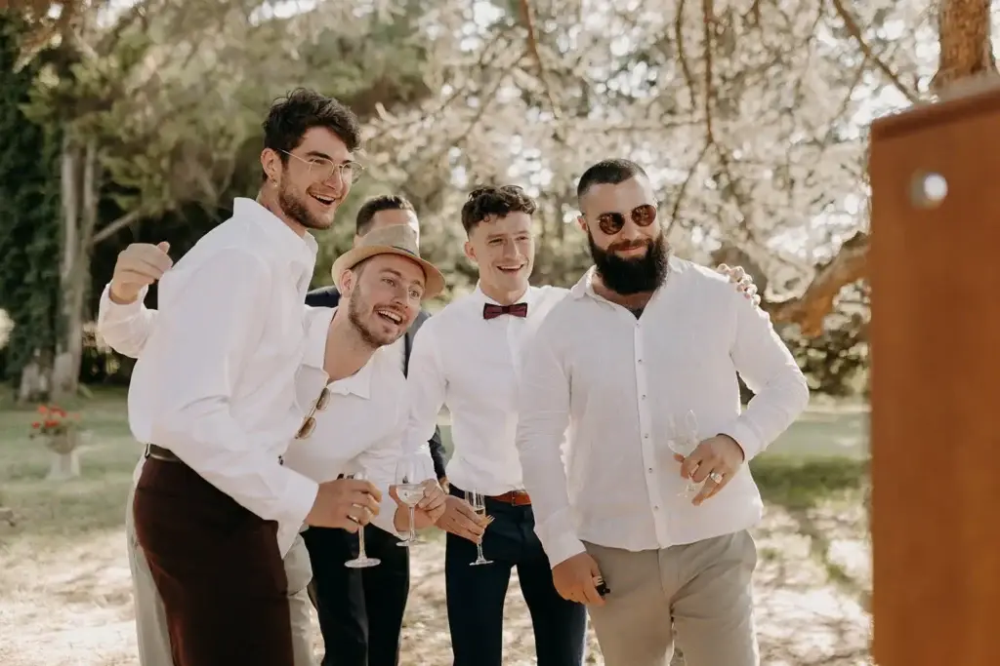
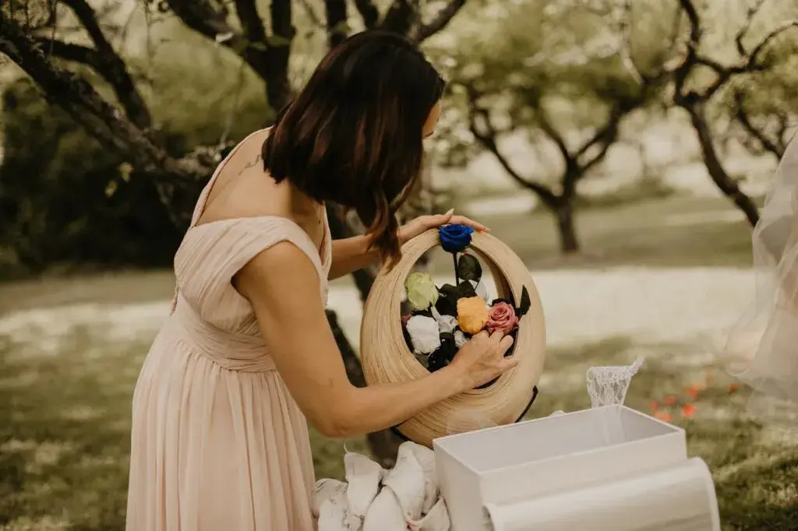
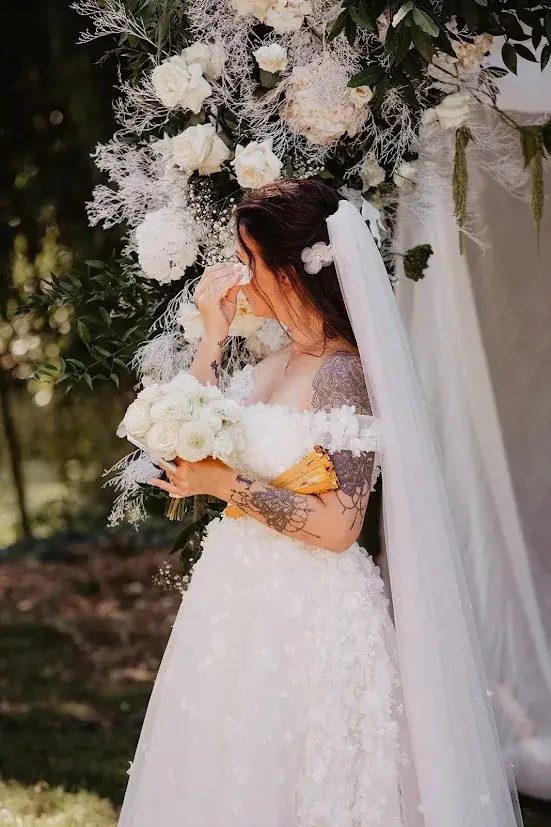
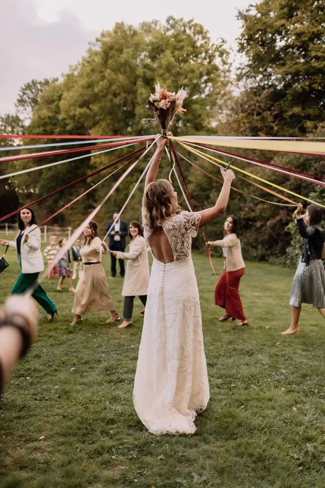
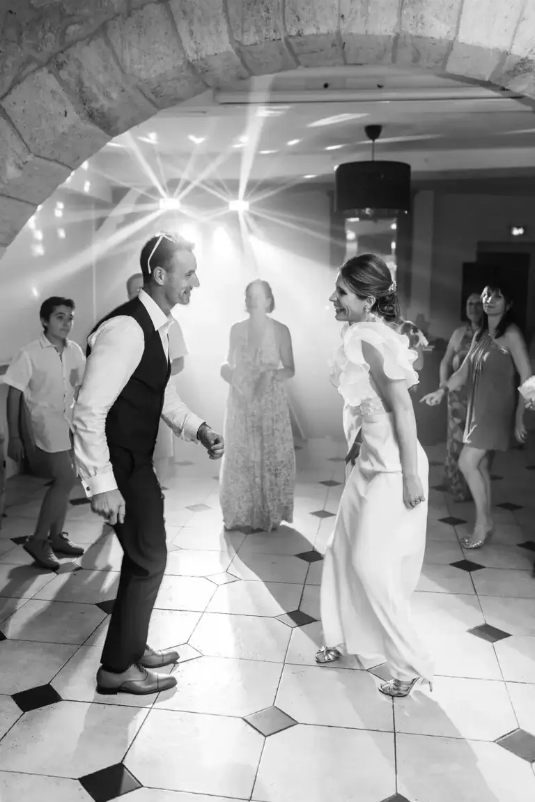
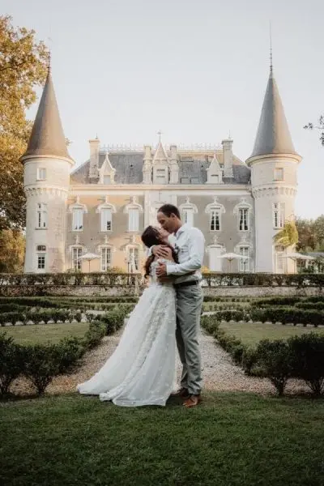

Emotions remain, details fade
When a couple starts planning their wedding, they naturally picture a perfect day. The venue is carefully chosen, the decor is thought through down to the smallest detail, the flowers are selected with care and every supplier is chosen to offer the most beautiful experience possible.
And yet, as the years go by, the memories that remain are not always the ones we expected.
Your guests probably won't remember the exact colour of the napkins or the drink served during the cocktail hour. They may have forgotten the menu, or even the name of the estate where you married.
What they will remember is an emotion. They will remember the look exchanged between the couple during the ceremony. The laughter shared during a speech. A parent's quiet tears. A song that brought everyone onto the dance floor.
Because, deep down, a wedding is never just about what we see. Above all, it is built around what we feel.
Today, couples are increasingly looking for a wedding that is personal, elegant and sincere. They want to offer their loved ones a unique experience and create wedding memories that will stay with everyone long after the big day.
But how do you make a wedding leave a real mark on everyone's heart?
The answer is often simpler than you think.
A memorable wedding doesn't try to impress
In the age of social media, it is easy to believe that a wedding has to be spectacular to be a success.
Images scroll past. Decor looks ever more impressive. Set designs compete in creativity. Trends change constantly. This wealth of inspiration is a wonderful source of ideas, but it can also make us forget what really matters.
A wedding doesn't need to be extravagant to be unforgettable. The most beautiful memories rarely come from a spectacular effect.
They appear when guests feel something real. When they understand that every detail tells a story. When they feel they are attending a wedding that deeply resembles the couple.
It is precisely this authenticity that turns a beautiful day into a lasting memory.
A personalised wedding doesn't try to follow a trend. It tries to tell a story. Your story.
Memories begin long before the big day

They are no longer a to-do list: they become part of the story.
We often imagine that memories begin the moment the ceremony starts. In reality, they are born long before.
The preparations are already part of the adventure. The first dress fitting, discovering the venue, meetings with suppliers, bursts of laughter during tastings, the occasional doubts and the moments of complicity. All these steps already help create precious memories.
A wedding doesn't last just one day: it represents months, sometimes years, of shared emotions. Being aware of this richness already lets you experience the preparations differently.
Your guests don't experience your wedding the way you do
When you plan your wedding, it is natural to focus on the many choices to be made: the decor, the seating plan, the order of the ceremony, the entertainment or the menu.
Yet your guests don't see the day through the same eyes. They don't know about the hours spent choosing the flowers. They are unaware of your hesitation between two colour palettes. They have no idea how long you spent choosing the invitations.
What they do perceive is an ambience, an atmosphere carrying an overall emotion.
They immediately feel whether a wedding is warm. They can tell when the couple is relaxed. They notice the sincere exchanges, the knowing looks and the joy flowing naturally.
In other words, your guests live an experience, and that experience becomes their memory.

Emotion is the most beautiful gift you can give
We often talk about wedding favours: the little touches left on the tables, the gifts everyone takes home when they leave the reception.
These are always appreciated, but they are not the real memory.
The most beautiful gift a couple can give their loved ones is invisible.
It is an emotion.
Emotions don't gather dust, and they can't be tidied away in a drawer.
They live on long after the day is over.
A heartfelt speech, a deeply personal ceremony, an unexpected surprise, a moment of silence.
All these moments create memories far more lasting than any object. And they are often what guests still talk about years later.


Every detail can tell a story
Creating memories doesn't mean organising a series of surprises. It is rather about giving meaning to what already exists. The seating plan can evoke a journey.
Table names can recall places that matter in your story. The decor can reflect your personality. Flowers can carry symbolic value. Music can accompany the most important moments of your relationship.
When every element has an intention, the wedding takes on a different dimension. Guests sense this coherence.
They understand that nothing was chosen at random. They no longer simply see beautiful decor: they discover a story told with delicacy. And that story, too, becomes a shared memory.
The most precious memories are not always planned
It is striking how often the most memorable moments of a wedding are the ones that appeared nowhere in the schedule.
A child bursting into laughter during the ceremony, a grandparent hugging the couple with emotion, an unexpected sunset or an impromptu conversation between two generations.
These moments can't be scheduled, and that is precisely what makes them so precious.
They remind us that, despite all the organisation involved, a wedding remains above all a deeply living day. Leaving room for spontaneity is surely one of the most beautiful ways to create authentic memories.

The five senses: precious allies for lasting memories

When we think of memories, we often think of photographs or videos. Yet our memory works in a far more complex way. It records emotions, but also everything our senses perceived during an important moment.
That is why wedding memories are not only visual.
They are also made of sounds, scents, tastes and even textures.
Sometimes all it takes is hearing a song to instantly relive an evening of dancing. Smelling a flower to be carried back to a ceremony. Tasting a dessert like the one served at the wedding to rediscover a forgotten emotion.
Couples often think about decor, but less about the sensory experience they want to offer. Yet it plays a full part in creating lasting memories.
Soft light at the end of the day, candles flickering as night falls, a carefully crafted playlist or the delicate scent of a seasonal bouquet all help create a unique atmosphere.
Guests may not remember exactly how many floral arrangements were on the tables. But they will remember that special feeling of well-being, softness and harmony.
And it is precisely this emotion that makes all the difference.
The guest experience, at the heart of memories
A wedding is above all a moment of sharing.
Of course, the day celebrates the union of two people. But it also brings together families, friends and sometimes distant generations, who take the time to reconnect.
That is why the guest experience plays an essential role in the memories they will keep.
From the moment they arrive, they sense an atmosphere. They take in the venue, discover the decor and meet loved ones they sometimes haven't seen for years. Very quickly, they feel an energy. If everything is smooth, warm and natural, they relax and enjoy every moment to the full.
Conversely, if waiting times drag on or the schedule seems confused, that feeling unconsciously colours their perception of the day.
Creating beautiful memories therefore means thinking about your guests' comfort as much as the look of the wedding.

It comes down to small touches, such as a warm welcome or a ceremony that helps them understand your story. Pleasant spaces to talk, a well-balanced pace.
All these decisions seem discreet, yet little by little they build an experience everyone will remember.
Photos tell part of the story… but not the whole story

Today, every wedding produces hundreds, sometimes thousands, of photographs. They preserve a precious record of the day.
But they never tell everything. A photo captures a moment, freezes a smile, immortalises a decor and reveals an emotion. What it cannot convey is the silence just before the bride walks in. It doesn't tell of the laughter that followed an improvised speech. It doesn't show the scent of the flowers, the coolness of a summer evening or the emotion felt as the first notes of a song ring out.
The most beautiful memories live precisely between the images. They belong to those who felt them. That is why it is so important to live your wedding to the full rather than focusing only on producing beautiful photographs.
The images will preserve the memories, but it is the emotions that give them their true value.
The wedding planner's role in creating memories
When we think of a wedding planner, we instinctively think of organisation, scheduling and coordinating suppliers.
Of course, these tasks are essential, but they don't capture the full richness of the role.
A wedding planner builds an experience. They think about the pace of the day, how guests will move around, how the highlights follow one another and how each moment connects to the next.
Their role is also to protect the couple. By taking care of the unexpected, they allow the couple to live their day to the full.
The couple no longer spend their time answering logistical questions. They take the time to look at their loved ones. They savour their ceremony. They dance, laugh and, above all, create their own memories.
This work often goes unseen. Yet it shapes how the day will be experienced.

Memories are built in the small moments
When couples talk about their wedding years later, they rarely mention only the big moments. They also talk about the details: the look exchanged a few seconds before the ceremony, the hand squeezed just before walking in, a conversation with a grandparent, a child asleep on a chair in the middle of the evening.
These scenes seem insignificant, yet they become the most precious memories.
Why? Because they are sincere.
They weren't staged. They tell real life. A wedding is not a series of performances. It is a day filled with simple moments that take on immense value over time.
Accepting that not everything will be perfect

There is one idea that often reassures couples.
Guests are not looking for perfection. They are looking for emotion.
A wedding can run a little late, have a speech that goes on longer than planned, unpredictable weather or a last-minute hitch, and still become the most beautiful memory of the year.
Why? Because nobody remembers a wedding for its perfection.
We remember it for how it made us feel. The unexpected sometimes becomes the funniest anecdote.
Small setbacks often even create moments of complicity. They remind us that a wedding is a living event. And it is precisely this spontaneity that makes it unique.
A memory isn't measured by the budget
It is sometimes tempting to believe that a spectacular wedding will necessarily leave a stronger memory. In reality, things are far more nuanced.
The budget creates a setting. It offers possibilities, but it doesn't create emotion. It is the thoughtful touches, the exchanges, the atmosphere and the sincerity that leave their mark on guests. An intimate wedding held in a family home can leave an extraordinary memory, just like a grand reception in a château.
The difference lies not in the venue but in the intention. When every choice is guided by the wish to share a true moment, memories build themselves naturally.

In short
Perhaps the most beautiful paradox of a wedding is this:
On the day itself, everything seems to go by very fast. Emotions follow one another, the hours fly past. Then the years go by.
And some memories take on a new importance. A photograph we rarely looked at becomes precious, a sentence spoken during a speech resonates differently, and the laughter of a loved one who has passed away becomes a treasure.
The wedding then lives on long after the celebration. It accompanies the couple's life and becomes part of their story.
And that is probably the true beauty of this day.
Lovely Day Event offers several services
Wedding planning
I step in at every stage of your preparations and guide you through your choices, bringing ideas and suggestions so that your wedding looks like no one but you.
Wedding design
Creative and passionate, I am a certified Wedding Designer and I create a scenographic atmosphere that matches the theme of your wedding.
On-the-day coordination
I will be the conductor of your day, managing the suppliers, the set-up of your decor and the smooth running of this beautiful day.